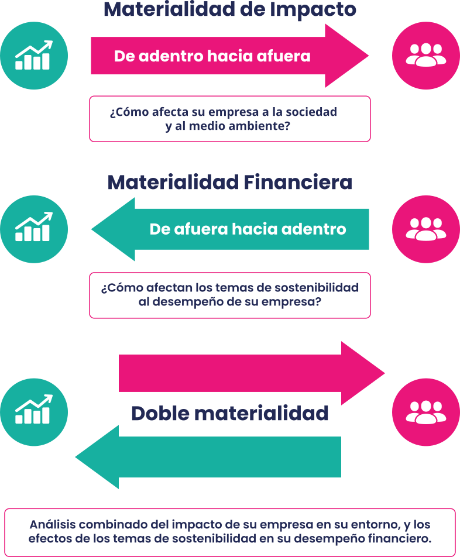

De muchos temas
a prioridades claras
Transforme impactos, riesgos y oportunidades en foco estratégico
Cuando todos los temas de sostenibilidad parecen importantes, priorizar se vuelve difícil. El estudio de doble materialidad ayuda a distinguir qué impactos genera la empresa sobre las personas y el medio ambiente, y qué riesgos y oportunidades pueden afectar su desempeño financiero. En ResponSable convertimos ese análisis en foco estratégico para decidir dónde actuar, qué reportar y cómo asignar mejor los recursos.

Para orientar estrategia e informe de sostenibilidad
Un estudio de doble materialidad convierte temas dispersos, presiones externas e iniciativas aisladas en una agenda priorizada. Permite identificar qué impactos genera la empresa y qué riesgos y oportunidades pueden afectar su operación, reputación, desempeño financiero o licencia social para operar.
Con esa lectura, Dirección y el área de sostenibilidad pueden decidir qué gestionar primero, alinear la estrategia, fortalecer el informe de sostenibilidad y sostener conversaciones más sólidas con grupos de interés. El valor no está en producir una matriz, sino en transformar información compleja en criterios claros para decidir.
Impactos, riesgos y oportunidades priorizados
El principal beneficio es dejar de gestionar la sostenibilidad como una lista extensa de temas. La empresa distingue qué asuntos exigen acción inmediata, cuáles pueden afectar su desempeño financiero y dónde existen oportunidades que conviene desarrollar.
Así, puede enfocar recursos, justificar presupuesto, definir responsabilidades e indicadores y sostener sus decisiones con mayor trazabilidad ante Dirección. Cuando se consulta a grupos de interés, el análisis también incorpora expectativas externas y ayuda a anticipar tensiones que una mirada exclusivamente interna podría pasar por alto.
De muchos temas
a prioridades claras
De una visión general
a impactos y efectos en el negocio
De percepciones
a criterios trazables
De esfuerzos dispersos
a recursos enfocados
De una matriz
a una ruta de acción
De comunicar acciones
a explicar prioridades
Realizamos el estudio de doble materialidad con una metodología estructurada para pasar del análisis de contexto a la matriz de doble materialidad, los Impactos, Riesgos y Oportunidades (IROs) priorizados y las recomendaciones estratégicas.
Analizamos estrategia, operación, documentos internos, cadena de valor, referentes y benchmark sectorial para identificar temas potencialmente relevantes.
Identificamos los impactos que genera la empresa y los riesgos y oportunidades de sostenibilidad que pueden afectar su desempeño y continuidad.
Aplicamos consultas y sesiones de trabajo para valorar la materialidad de impacto y financiera, y consolidarlas mediante criterios claros y trazables.
Traducimos los resultados en prioridades y recomendaciones para orientar la estrategia, la gestión de riesgos, el informe y el diálogo con grupos de interés.
Dudas habituales
Es un ejercicio estratégico que identifica temas de sostenibilidad relevantes desde dos perspectivas: impactos de la empresa en su entorno y efectos en el desempeño del negocio.
Sirve para priorizar impactos, riesgos y oportunidades, orientar la estrategia de sostenibilidad, enfocar recursos, fortalecer el informe de sostenibilidad y tomar mejores decisiones.
IROs significa Impactos, Riesgos y Oportunidades. Ayudan a entender qué efectos genera la empresa, qué riesgos debe anticipar y qué oportunidades puede aprovechar.
No forzosamente y no siempre con la misma profundidad. En ResponSable sí recomendamos incluir consulta, porque fortalece la trazabilidad y contrasta la visión interna con expectativas externas.
Estudio completo, modalidad Coach, apoyo con IA o consulta a grupos de interés. La elección depende del presupuesto, la madurez interna y el nivel de evidencia requerido.
Completo si ResponSable lidera el proceso. Coach si el equipo interno ejecuta con guía experta. Con IA optimiza presupuesto. Con consulta fortalece evidencia externa.
Puede incluirse como adicional para estimar, en IROs priorizados, rangos de impacto financiero por horizonte temporal, con supuestos validados por Finanzas.
Matrices de impacto, financiera y doble materialidad; descripción de IROs; hallazgos y recomendaciones para estrategia, reporte y toma de decisiones.
Priorice sus impactos, riesgos y oportunidades con criterio de negocio, y convierta la doble materialidad en la base para orientar su estrategia de sostenibilidad, su informe de sostenibilidad y sus decisiones de negocio.
Sigue explorando
Agradecemos su interés en ResponSable. Elija entre las siguientes opciones; nos comunicaremos con usted tan pronto como sea posible.
Hemos recibido su solicitud. Un especialista de ResponSable le contactará en menos de 24 horas hábiles.